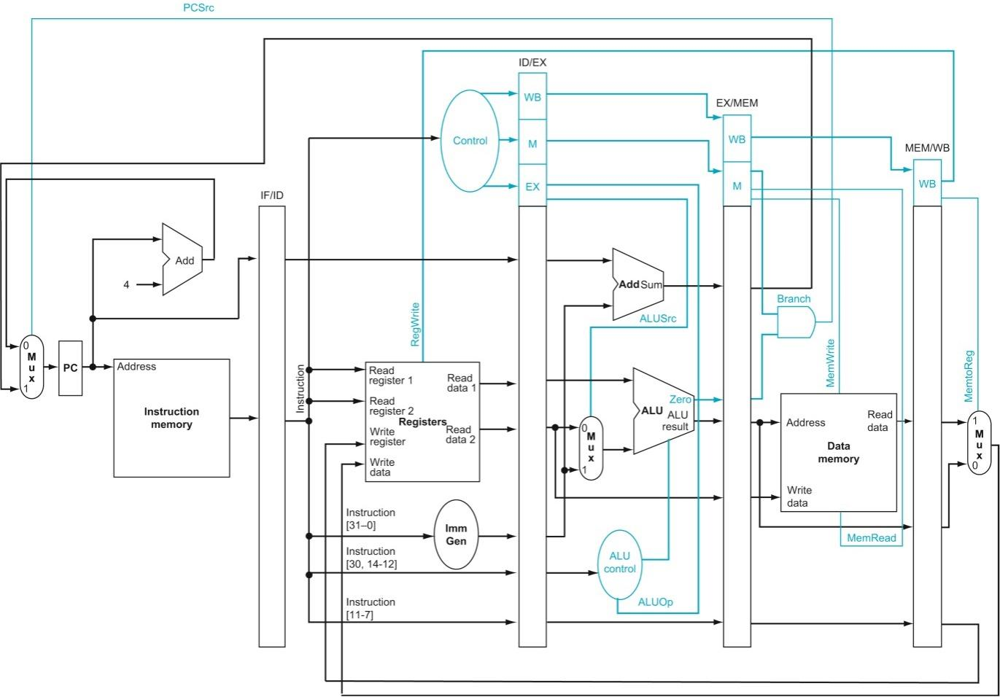

01 /
Five-Stage Pipelined RISC-V Processor
Academic project / Rose-Hulman / CSSE 232: Computer Architecture / Team project
Following an instruction all the way through.
As part of a team, I worked on a RISC-V processor, progressing from a single-cycle design toward a five-stage pipeline. The challenge was keeping instructions moving while preserving the dependencies between them.
The datapath
Our implementation work covered instruction fetch (IF), decode (ID), execute (EX), memory (MEM), and write-back (WB), with IF/ID, ID/EX, EX/MEM, and MEM/WB pipeline registers carrying state between stages.

Dependencies and hazards
We worked on forwarding and hazard detection for data dependencies, load-use stalls, and control hazards from branches and jumps.
Why forwarding and stalls matter
A dependent instruction can need a result before it reaches write-back. Forwarding makes an available result usable sooner; a load-use dependency can still require a stall while the value arrives from memory. Branches and jumps also require care so instructions follow the correct control path.
Tests and verification
We developed and debugged Verilog testbenches using ModelSim waveforms, and validated processor behavior with instruction and program-level tests, including GCD and relative-prime programs.
Collaborative implementation. Work described here reflects our team's design and verification work; final pipeline completion status is still to be confirmed.